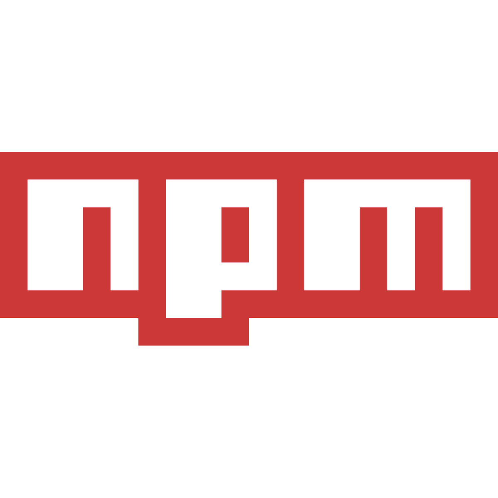
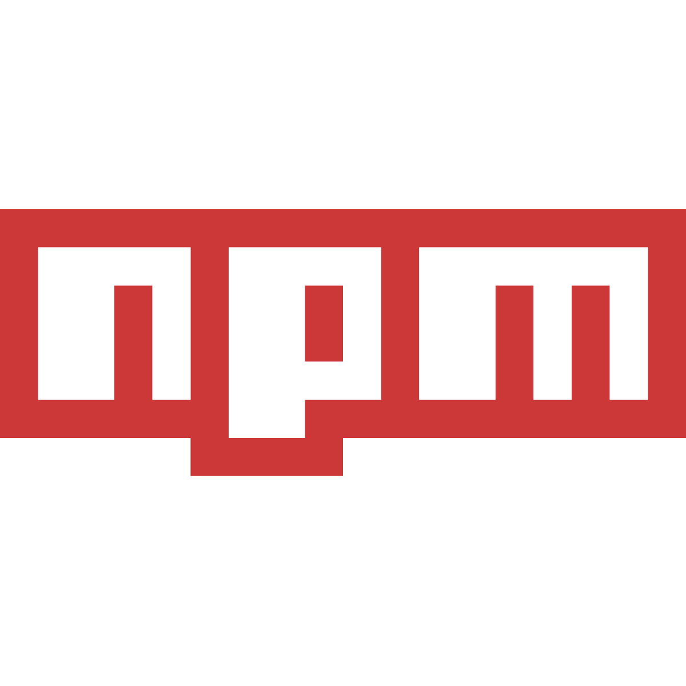
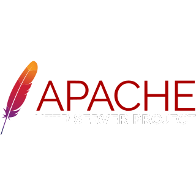
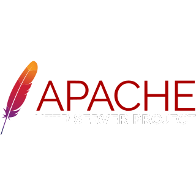
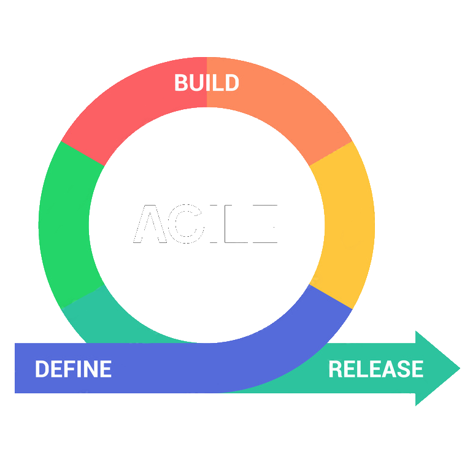
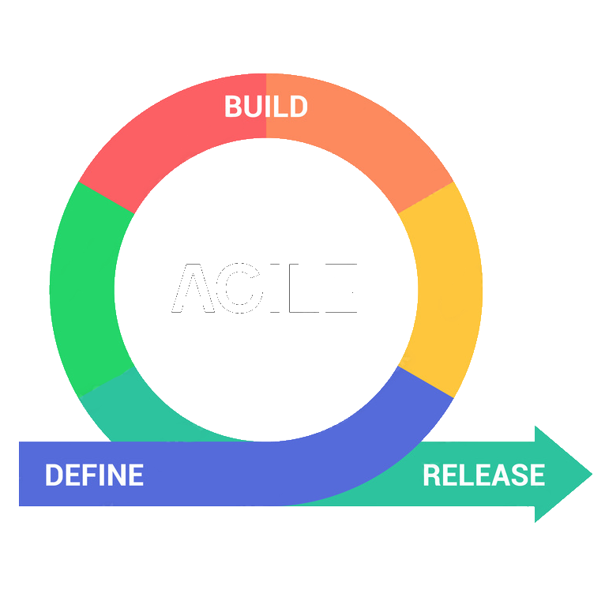

 


 



Comus Party est une application web qui offre des mini-jeux en ligne. Bien que je n'aie pas pris part à la conception initiale, j'ai rejoint le groupe en 2de année afin d'apprendre les méthodes agiles et SCRUM ainsi que pour participer au développement de l'application.

Songs market est un prototype d'application web permettant aux utilisateurs d'acheter des musiques. L'application n'est pas faite pour être déployée ou même complètement fonctionnelle. Elle consiste en une collection de musiques pouvant être ajoutées au panier avec une page pour les visualiser. Elle contient également un back-office pour ajouter, supprimer ou modifier des musiques.


Book'n'Go est une application web sur laquelle j'ai travaillé avec un groupe de 4 durant ma première année à l'université. Son but est d'aider les touristes à Bayonne à organiser leurs voyages tout en leur permettant de partager leurs expériences. Ce projet a d'abord été pensé comme une expérience pour apprendre la conception et la gestion de projets.